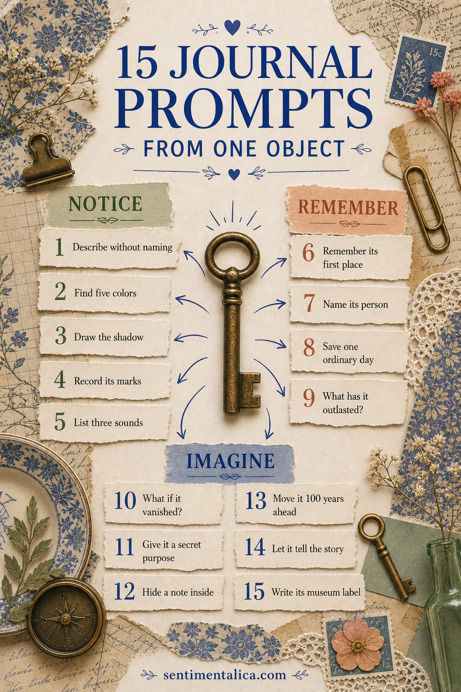
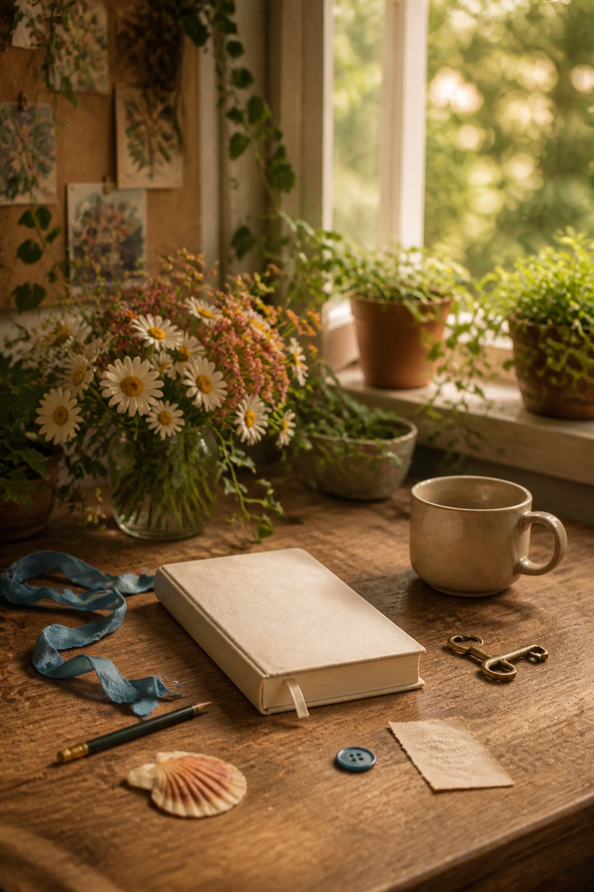

When you have nothing to journal about, do not search for a bigger subject. Choose the nearest ordinary object: a mug, key, receipt, button, pencil, shell, or folded scarf. Attention can turn one small thing into many possible pages.
Place the object in front of you and choose only one prompt. You do not need to answer all fifteen. The list is a set of doors, not an assignment.

Prompts for noticing
- Describe the object without naming it.
- List five colors hidden inside its main color.
- Draw its shadow rather than its outline.
- Record every mark that proves it has been used.
- Write three sounds it makes or might make.
These prompts are useful when your mind feels noisy. They ask for evidence rather than inspiration, which gives the page somewhere simple to begin.
Prompts for memory
- Write about the first place you remember seeing it.
- Name the person most connected with it.
- Describe an ordinary day when it mattered.
- Write what it has outlasted.
- Imagine the memory you would lose if it disappeared.
Keep the memory specific. A chipped mug may lead to one kitchen morning rather than an entire family history. Small scenes often carry more feeling.

Prompts for imagination
- Give the object a secret purpose.
- Write the note that might be hidden inside it.
- Place it in a room one hundred years from now.
- Tell its story from the object’s point of view.
- Invent a museum label that gets one important fact wrong.
You can answer with a paragraph, list, diagram, collage, or one sentence. The prompt chooses the direction; the page can choose its own form.
Turn the response into a layered page
Trace or photograph the object, then add one material that shares its texture. Pair metal with foil or gray pencil, ceramic with smooth paper, fabric with thread, and old wood with kraft paper. Use a color sampled directly from the object as the accent.
Place your written response where it remains readable. Decoration should help the object’s story feel clearer, not hide the reason you began.
Make this a repeatable practice
Keep a small envelope of object names beside your journal. When you feel stuck, choose one at random and spend ten minutes with a single prompt. Return the slip afterward; the same object can open a different memory on another day.
You do not need a remarkable life to make a meaningful page. You need a little time with what is already there.
If the first answer feels too obvious, ask “what else?” once. Stop after the second answer and make the page. Gentle limits keep curiosity from turning into pressure.
Find more low-pressure ways to begin in the Sentimentalica journal.